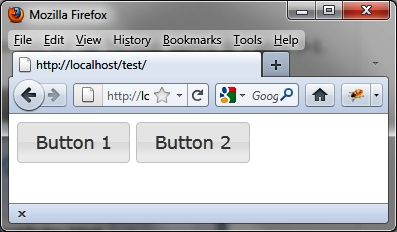

{% include JB/setup %}
{% raw %}
<div>
<div class="calibre13"></div><div class="book" title="Chapter 5. Buttons"><div class="book"><div class="book"><div class="book"><div class="calibre13"></div><h1 class="title1"><a id="buttons" class="calibre1"></a>Chapter 5. Buttons</h1></div></div></div><p class="calibre7">jQuery UI allows us to give a different appearance to interface
  elements of the HTML page, such as buttons, radio buttons, and
  checkboxes.</p><div class="book" title="Basic Principles of Buttons"><div class="book"><div class="book"><div class="book"><h1 class="title2"><a id="basic_principles_of_buttons" class="calibre1"></a>Basic Principles of Buttons</h1></div></div></div><p class="calibre7">Suppose we want to write the HTML code to display the buttons shown
    in <a class="ulink" href="ch05.html#buttons_in_the_html_page" title="Figure 5-1. Buttons in the HTML page">Figure 5-1</a>.</p><p class="calibre7">There are two buttons with a different aspect than the usual
    buttons. To view them, you must write a <code class="literal">&lt;span&gt;</code> containing the button text. You can
    replace the <code class="literal">&lt;span&gt;</code> element with
    another HTML element, such as <code class="literal">&lt;div&gt;</code> or <code class="literal">&lt;button&gt;</code>, but the button layout will be
    different (e.g., one above the other for a <code class="literal">&lt;div&gt;</code>):</p><a id="I_programlisting5_d1e3940" class="firstname"></a><pre class="programlisting">&lt;!DOCTYPE html&gt;
&lt;script src = jquery.js&gt;&lt;/script&gt;
&lt;script src = jqueryui/js/jquery-ui-1.8.16.custom.min.js&gt;&lt;/script&gt;

&lt;link rel=stylesheet type=text/css
      href=jqueryui/css/smoothness/jquery-ui-1.8.16.custom.css /&gt;

&lt;span id="button1"&gt; Button 1 &lt;/span&gt;
&lt;span id="button2"&gt; Button 2 &lt;/span&gt;

&lt;script&gt;

<span class="firstname"><strong class="userinput">$("#button1, #button2").button ();</strong></span>

&lt;/script&gt;</pre><p class="calibre7">The <code class="literal">button ()</code> method transforms
    the HTML elements into buttons, with automatic management of mouse
    movements on them, all managed transparently by jQuery UI.</p><p class="calibre7">The <code class="literal">&lt;!DOCTYPE html&gt;</code>
    directive is mandatory for improving the display in Internet <span class="firstname">Explorer.</span></p><div class="book"><div class="figure"><a id="buttons_in_the_html_page" class="firstname"></a><div class="book"><div class="book"><a id="I_mediaobject5_d1e3962" class="firstname"></a></div></div><p class="title4">Figure 5-1. Buttons in the HTML page</p></div></div></div></div></div>

{% endraw %}

